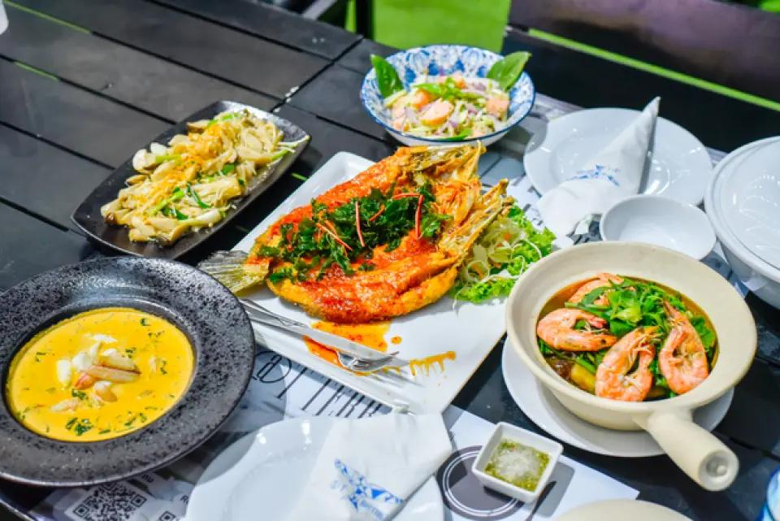
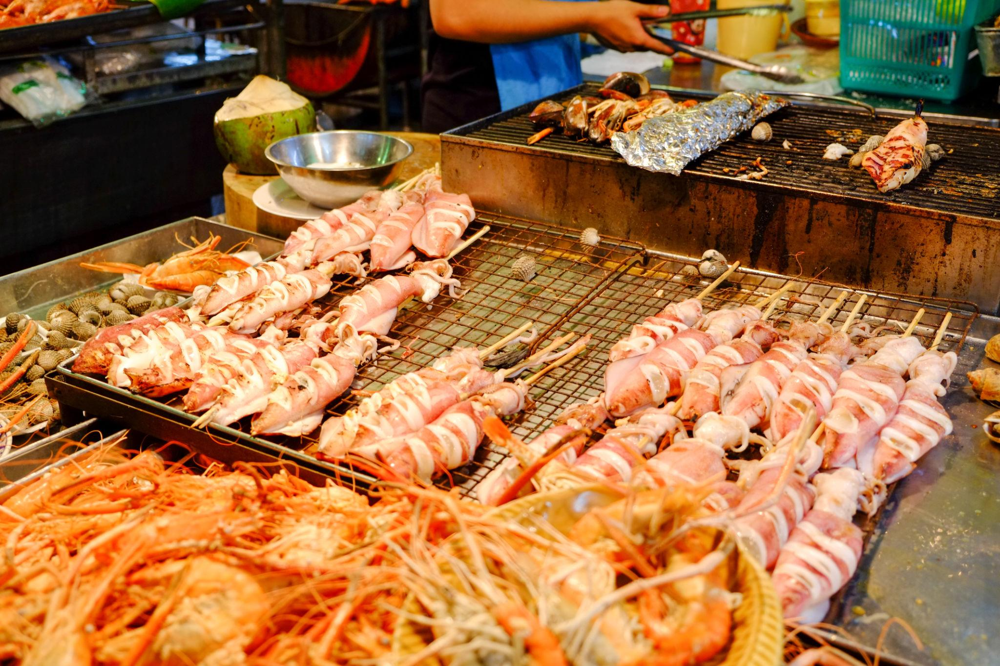

อาหารและของฝาก
แนะนำอาหารพื้นถิ่น เมนูขึ้นชื่อ และของฝากที่ไม่ควรพลาดเมื่อมาเที่ยวจังหวัดประจวบคีรีขันธ์

ข้าวเหนียวมะม่วง
ข้าวเหนียวมูนหอมหวานมันจากกะทิ รับประทานคู่กับมะม่วงสุกเนื้อฉ่ำ เป็นขนมหวานยอดนิยมที่หลายคนชื่นชอบ
แนะนำ: ร้านขนมหวานและตลาดท้องถิ่น

ขนมและของฝากพื้นเมือง
เลือกซื้อขนมพื้นบ้านและของกินเล่นหลากหลายชนิด เหมาะสำหรับซื้อกลับไปฝากครอบครัวและเพื่อน ๆ
แนะนำ: ตลาดและร้านขายของฝาก

กาแฟโบราณและไข่ลวก
เครื่องดื่มรสชาติเข้มข้นแบบดั้งเดิม รับประทานคู่กับไข่ลวก เหมาะสำหรับมื้อเช้าในบรรยากาศร้านกาแฟเก่าแก่
แนะนำ: ร้านกาแฟโบราณในชุมชน

สับปะรดปราณบุรี
ผลไม้ขึ้นชื่อของจังหวัดประจวบคีรีขันธ์ มีรสชาติหวานฉ่ำ กลิ่นหอม สามารถรับประทานสดหรือนำไปแปรรูปได้
แนะนำ: ตลาดผลไม้และร้านค้าท้องถิ่น

อาหารทะเลสด
รวมเมนูอาหารทะเลสดใหม่ ทั้งกุ้ง ปู ปลา และหมึก นำมาปรุงเป็นอาหารหลากหลายเมนู รสชาติอร่อย
แนะนำ: ร้านอาหารทะเลริมชายหาด

ปลาหมึกย่างและกุ้งเผา
อาหารทะเลยอดนิยม นำปลาหมึกและกุ้งมาย่างจนหอม รับประทานคู่กับน้ำจิ้มซีฟู้ดรสจัดจ้าน
แนะนำ: ตลาดอาหารทะเลและตลาดริมชายหาด
ไปหน้าวางแผนที่เที่ยว